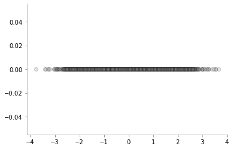
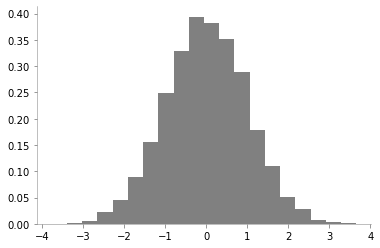
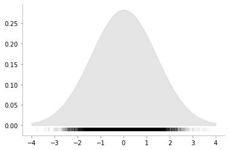
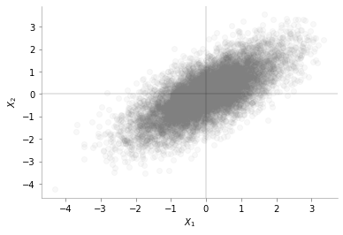
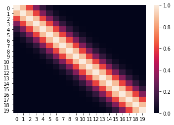
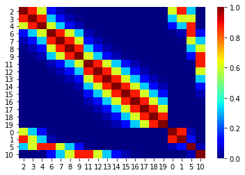
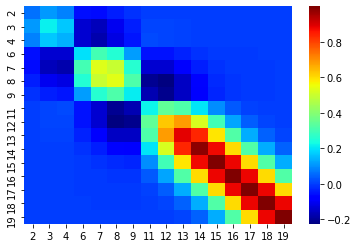
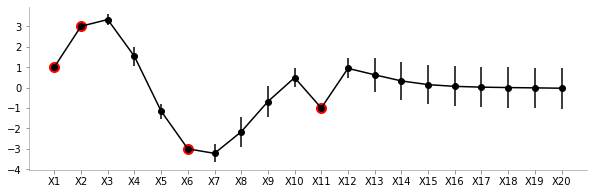
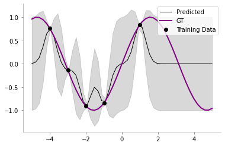
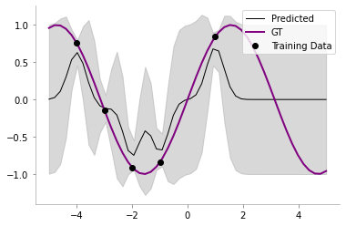

import numpy as np
import matplotlib.pyplot as plt
import warnings
warnings.filterwarnings('ignore')
%matplotlib inlineAn example

Let us look at the GIF above. It shows a non-linear fit with uncertainty on a set of points in the 2d space. The uncertainty is shown by the gray shadowed region. The animation shows how the fit and the uncertainty varies as we keep adding more points (shown as big circles). As expected, as more points are added, the uncertainty of the fit in the vicinity of the added points reduces. This is an example of Gaussian Processes (GP) regression in play.
Introduction
There exist some great online resources for Gaussian Processes (GPs) including an excellent recent Distill.Pub article. This blog post is an attempt with a programatic flavour. In this notebook, we will build the intuition and learn some basics of GPs. This notebook is heavily inspired by the awesome tutorial by Richard Turner. Here is the link to the slides and video. Lectures videos and notes from Nando De Freitas’ course are an amazing resource for GPs (and anything ML!).
Some imports
A function to make the Matplotlib plots prettier
SPINE_COLOR = 'gray'
def format_axes(ax):
for spine in ['top', 'right']:
ax.spines[spine].set_visible(False)
for spine in ['left', 'bottom']:
ax.spines[spine].set_color(SPINE_COLOR)
ax.spines[spine].set_linewidth(0.5)
ax.xaxis.set_ticks_position('bottom')
ax.yaxis.set_ticks_position('left')
for axis in [ax.xaxis, ax.yaxis]:
axis.set_tick_params(direction='out', color=SPINE_COLOR)
return axOne dimensional Gaussian/Normal
We will start the discussion with 1d Gaussians. Let us write some simple code to generate/sample data from \(\mathcal{N}(\mu=0, \sigma=1)\)
one_dim_normal_data = np.random.normal(0, 1, size=10000)Let us now visualise the data in a 1d space using scatter plot
plt.scatter(one_dim_normal_data, np.zeros_like(one_dim_normal_data), alpha=0.2, c='gray', edgecolors='k', marker='o')
format_axes(plt.gca())
As we would expect, there are a lot of samples close to zero (mean) and as we go further away from zero, the number of samples keeps reducing. We can also visualise the same phenomenon using a normed histogram shown below.
plt.hist(one_dim_normal_data, density=True, bins=20, color='gray')
format_axes(plt.gca())
We can notice that there is a high probability of drawing samples close to the mean and the probability is low far from the mean.
However, since histograms come with their own set of caveats, let us use kernel desnity estimation for obtaining the probability density of 1d Gaussian.
from sklearn.neighbors import KernelDensity
x_d = np.linspace(-4, 4, 100)
# instantiate and fit the KDE model
kde = KernelDensity(bandwidth=1.0, kernel='gaussian')
kde.fit(one_dim_normal_data[:, None])
# score_samples returns the log of the probability density
logprob = kde.score_samples(x_d[:, None])
plt.fill_between(x_d, np.exp(logprob), alpha=0.2, color='gray')
plt.plot(one_dim_normal_data, np.full_like(one_dim_normal_data, -0.01), '|k', markeredgewidth=0.1)
format_axes(plt.gca())
We can now see a smoother version of the histogram and can again verify the properties of 1D Gaussian. Let us now vary the variance of 1D Gaussian and make the same plots to enhance our understanding of the concept.
fig, ax = plt.subplots(ncols=3, sharey=True, figsize=(9, 3))
x_d = np.linspace(-6, 6, 400)
for i, var in enumerate([0.5, 1, 2]):
one_dim_normal_data = np.random.normal(0, var, size=10000)
kde = KernelDensity(bandwidth=1.0, kernel='gaussian')
kde.fit(one_dim_normal_data[:, None])
# score_samples returns the log of the probability density
logprob = kde.score_samples(x_d[:, None])
ax[i].fill_between(x_d, np.exp(logprob), alpha=0.2, color='gray')
ax[i].plot(one_dim_normal_data, np.full_like(one_dim_normal_data, -0.01), '|k', markeredgewidth=0.1)
format_axes(ax[i])
ax[i].set_title(f"Variance = {var}")
We can see that how increasing the variance makes the data more spread.
Bi-variate Gaussian
Having discussed the case of 1d Gaussian, now let us move to multivariate Gaussians. As a special case, let us first consider bi-variate or 2d Gaussian. It’s parameters are the mean vector which will have 2 elements and a covariance matrix.
We can write the distribution as: \[ \begin{pmatrix} X_1 \\ X_2 \end{pmatrix} \sim \mathcal{N} \left( \begin{pmatrix} \mu_1 \\ \mu_2 \end{pmatrix} , \begin{pmatrix} a & \rho \\ \rho & b \end{pmatrix} \right) \]
where \(\mu_1\), \(\mu_2\) are the means for \(X_1\) and \(X_2\) respectively; \(a\) is the standard deviation for \(X_1\), \(b\) is the standard deviation for \(X_2\) and \(\rho\) is the correlation between \(X_1\) and \(X_2\)
Let us now draw some data from: \[ \begin{pmatrix} X_1 \\ X_2 \end{pmatrix} \sim \mathcal{N} \left( \begin{pmatrix} 0 \\ 0 \end{pmatrix} , \begin{pmatrix} 1 & 0.7 \\ 0.7 & 1 \end{pmatrix} \right) \]
data = np.random.multivariate_normal(mean = np.array([0, 0]), cov = np.array([[1, 0.7], [0.7, 1]]), size=(10000, ))plt.scatter(data[:, 0], data[:, 1], alpha=0.05,c='gray')
plt.axhline(0, color='k', lw=0.2)
plt.axvline(0, color='k', lw=0.2)
plt.xlabel(r"$X_1$")
plt.ylabel(r"$X_2$")
format_axes(plt.gca())
We can see from the plot above that the data is distributed around mean [0, 0]. We can also see the positive correlation between \(X_1\) and \(X_2\)
Marginalisation for bivariate Gaussian
Let us look into an interesting plot provided by Seaborn.
import pandas as pd
data_df = pd.DataFrame(data, columns=[r'$X_1$',r'$X_2$'])import seaborn as sns
g = sns.jointplot(x= r'$X_1$', y=r'$X_2$', data=data_df, kind="reg",color='gray')
The central plot is exactly the same as the scatter plot we made earlier. But, we see two additional 1d KDE plots at the top and the right. What do these tell us? These tell us the marginal 1d distributions of \(X_1\) and \(X_2\).
The marginal distribution of \(X_1\) is the distribution of \(X_1\) considering all values of \(X_2\) and vice versa. One of the interesting properties of Gaussian distributions is that the marginal distribution of a Gaussian is also a Gaussian distribution. MathematicalMonk on Youtube has a great set of lectures on this topic that I would highly recommend!
What would you expect the marginal distribution of \(X_1\) to look like? No prizes for guessing.
Given \[ \begin{pmatrix} X_1 \\ X_2 \end{pmatrix} \sim \mathcal{N} \left( \begin{pmatrix} \mu_1 \\ \mu_2 \end{pmatrix} , \begin{pmatrix} a & \rho \\ \rho & b \end{pmatrix} \right) \]
we have the marginal distribution of: \[X_1 \sim \mathcal{N}(\mu_1, a)\] and \[X_2 \sim \mathcal{N}(\mu_2, b)\]
def plot_jointplot_2d(a, b, rho):
data = np.random.multivariate_normal(mean = np.array([0, 0]), cov = np.array([[a, rho], [rho, b]]), size=(10000, ))
data_df = pd.DataFrame(data, columns=[r'$X_1$',r'$X_2$'])
g = sns.jointplot(x= r'$X_1$', y=r'$X_2$', data=data_df, kind="reg",color='gray')We would make these plots for mean zero.
plot_jointplot_2d(1, 1, -0.7)
In the plot above, for \(a=1\), \(b=1\) and \(\rho=0.7\) we can see the negative correlation (but high) between \(X_1\) and \(X_2\).
Let us now increase the variance in \(X_1\) and keep all other paramaters constant.
plot_jointplot_2d(2, 1, -0.7)
One can see from the plot above that the variance in \(X_1\) is much higher now and the plot extends from -6 to +6 for \(X_1\) while earlier it was restricted from -4 to 4.
plot_jointplot_2d(1, 1, 0.0)
One can see from the plot above that the correlation between \(X_1\) and \(X_2\) is zero.
Surface plots for bi-variate Gaussian
We will now look into surface plots for bi-variate Gaussian. This is yet another way to plot and understand Gaussian distributions. I borrow code from an excellent tuorial on plotting bivariate Gaussians.
from scipy.stats import multivariate_normal
from mpl_toolkits.mplot3d import Axes3D
from matplotlib import cm
def make_pdf_2d_gaussian(mu, sigma):
N = 60
X = np.linspace(-3, 3, N)
Y = np.linspace(-3, 4, N)
X, Y = np.meshgrid(X, Y)
# Pack X and Y into a single 3-dimensional array
pos = np.empty(X.shape + (2,))
pos[:, :, 0] = X
pos[:, :, 1] = Y
F = multivariate_normal(mu, sigma)
Z = F.pdf(pos)
# Create a surface plot and projected filled contour plot under it.
fig = plt.figure()
ax = fig.gca(projection='3d')
ax.plot_surface(X, Y, Z, rstride=3, cstride=3, linewidth=1, antialiased=True,
cmap=cm.Greys)
ax.set_xlabel(r"$X_1$")
ax.set_ylabel(r"$X_2$")
ax.set_zlabel("PDF")
cset = ax.contourf(X, Y, Z, zdir='z', offset=-0.15, cmap=cm.Greys)
# Adjust the limits, ticks and view angle
ax.set_zlim(-0.15,0.25)
ax.set_zticks(np.linspace(0,0.2,5))
ax.view_init(27, -15)
ax.set_title(f'$\mu$ = {mu}\n $\Sigma$ = {sigma}')mu = np.array([0., 0.])
sigma = np.array([[ 1. , -0.5], [-0.5, 1]])
make_pdf_2d_gaussian(mu, sigma)
It can be seen that the probability peaks arounds \(X_1=0\) and \(X_2=0\). The bottom plot shows the same concept using contour plots which we will heavily use from now on. The different circles in the bottom contour plot denote the loci of same probability density. Since the contour plot requires a lesser dimension, it will be easier to use in our further analysis.
Also, from the contour plots, we can see the correlation between \(X_1\) and \(X_2\).
mu = np.array([0., 0.])
sigma = np.array([[ 1. , 0], [0, 1]])
make_pdf_2d_gaussian(mu, sigma)
In the plot above, we can see that \(X_1\) and \(X_2\) are not correlated.
Contour plots for 2D Gaussians
Having seen the relationship between the surface plots and the contour plots, we will now exclusively focus on the contour plots. Here is a simple function to generate the contour plot for 2g gaussian with mean and covariance as the arguments.
def plot_2d_contour_pdf(mu, sigma):
X = np.linspace(-3, 3, 60)
Y = np.linspace(-3, 4, 60)
X, Y = np.meshgrid(X, Y)
# Pack X and Y into a single 3-dimensional array
pos = np.empty(X.shape + (2,))
pos[:, :, 0] = X
pos[:, :, 1] = Y
F = multivariate_normal(mu, sigma)
Z = F.pdf(pos)
plt.xlabel(r"$X_1$")
plt.ylabel(r"$X_2$")
plt.title(f'$\mu$ = {mu}\n $\Sigma$ = {sigma}')
plt.contourf(X, Y, Z, zdir='z', offset=-0.15, cmap=cm.Greys)
plt.colorbar()
format_axes(plt.gca())mu = np.array([0., 0.])
sigma = np.array([[ 1. , 0.5], [0.5, 1.]])
plot_2d_contour_pdf(mu, sigma)
The plot above shows the contour plot for 2d gaussian with mean [0, 0] and covariance [[ 1. , 0.5], [0.5, 1.]]. We can see the correlation between \(X_1\) and \(X_2\)
Sample from 2d gaussian and visualising it on XY plane
We will now sample a point from a 2d Gaussian and describe a new way of visualising it.

The left most plot shows the covariance matrix.
The middle plot shows the contour plot. The dark point marked in the contour plot is a sampled point (at random) from this 2d Gaussian distribution.
The right most plot is an alternative representation of the sampled point. The x-axis corresponds to the labels \(X_1\) and \(X_2\) and the corresponding y-axis are the coordinates of the point in the \(X_1\), \(X_2\) dimension shown in the contour plot.
We will now write a function to generate a random sample from a 2d gaussian given it’s mean and covariance matrix.
def plot_2d_contour_pdf_dimensions(mu, sigma, random_num):
fig, ax = plt.subplots(ncols=3, figsize=(12, 4))
X = np.linspace(-3, 3, 60)
Y = np.linspace(-3, 3, 60)
X, Y = np.meshgrid(X, Y)
# Pack X and Y into a single 3-dimensional array
pos = np.empty(X.shape + (2,))
pos[:, :, 0] = X
pos[:, :, 1] = Y
F = multivariate_normal(mu, sigma)
Z = F.pdf(pos)
random_point = F.rvs(random_state=random_num)
sns.heatmap(sigma, ax=ax[0], annot=True)
ax[1].contour(X, Y, Z, cmap=cm.Greys)
ax[1].scatter(random_point[0], random_point[1], color='k',s=100)
ax[1].set_xlabel(r"$X_1$")
ax[1].set_ylabel(r"$X_2$")
data_array = pd.Series(random_point, index=['X1','X2'])
data_array.plot(ax=ax[2], kind='line', marker='o',color='k')
plt.xticks(np.arange(len(data_array.index)), data_array.index.values)
ax[2].set_ylim(-3, 3)
format_axes(ax[0])
format_axes(ax[1])
format_axes(ax[2])
ax[0].set_title("Covariance Matrix")
ax[1].set_title("Contour of pdf")
ax[2].set_title("Visualising the point")
plt.suptitle(f"Random state = {random_num}", y=1.1)
plt.tight_layout()
import os
if not os.path.exists("images"):
os.makedirs("images")
if not os.path.exists(f"images/{sigma[0, 1]}"):
os.makedirs(f"images/{sigma[0, 1]}")
plt.savefig(f"images/{sigma[0, 1]}/{random_num}.jpg", bbox_inches="tight")
plt.close()We will now create 20 such samples and animate them
for i in range(20):
plot_2d_contour_pdf_dimensions( mu, np.array([[ 1. , 0.1], [0.1, 1.]]), i)!convert -delay 20 -loop 0 images/0.1/*.jpg sigma-0-1.gif
Since the correlation between the two variables \(X_1\) and \(X_2\) was low (0.1), we can the see that rightmost plot jumping a lot, i.e. to say that the values of \(X_1\) and \(X_2\) are not tighly constrained to move together.
for i in range(20):
plot_2d_contour_pdf_dimensions( mu, np.array([[ 1. , 0.7], [0.7, 1.]]), i)!convert -delay 20 -loop 0 images/0.7/*.jpg sigma-0-7.gif
The above GIF shows the same plot/animation for the 2d Gaussian where the correlation between the two variables is high (0.7). Thus, we can see that the two variables tend to move up and down together.
Conditional Bivariate Distribution
All excellent till now. Now, let us move to the case in which some variable’s values are known. We would then look to find the distribution of the other variables conditional on the value of the known variable. I borrow some text from Wikipedia on the subject.
\[ \begin{pmatrix} X_1 \\ X_2 \end{pmatrix} \sim \mathcal{N} \left( \begin{pmatrix} 0 \\ 0 \end{pmatrix} , \begin{pmatrix} 1 & \rho \\ \rho & 1 \end{pmatrix} \right) \]
The conditional expectation of \(X_2\) given \(X_1\) is: $(X_2 X_1=x_1)= x_1 $
and the conditional variance is: \(\operatorname{var}(X_2 \mid X_1 = x_1) = 1-\rho^2\)
So, the question now is: suppose we fix \(X_1 = 1\), what is the distribution of \(X_2\). Again, Gaussians are amazing - the conditional distributionon is again a Gaussian. Let us make some plots to understand better. The following plots would be showing the distribution of \(X_2\) with fixed \(X_1\)
def plot_2d_contour_pdf_dimensions_fixed_x1(sigma, random_num, x1 = 1):
mu = np.zeros(2)
fig, ax = plt.subplots(ncols=3, figsize=(12, 4))
X = np.linspace(-3, 3, 60)
Y = np.linspace(-3, 3, 60)
X, Y = np.meshgrid(X, Y)
# Pack X and Y into a single 3-dimensional array
pos = np.empty(X.shape + (2,))
pos[:, :, 0] = X
pos[:, :, 1] = Y
F = multivariate_normal(mu, sigma)
Z = F.pdf(pos)
rho = sigma[0, 1]
F_cond_x1 = multivariate_normal(rho*x1, 1-rho**2)
random_point_x2 = F_cond_x1.rvs(random_state=random_num)
sns.heatmap(sigma, ax=ax[0], annot=True)
ax[1].contour(X, Y, Z, cmap=cm.Greys)
ax[1].scatter(x1, random_point_x2, color='k',s=100)
ax[1].set_xlabel(r"$X_1$")
ax[1].set_ylabel(r"$X_2$")
data_array = pd.Series([x1, random_point_x2], index=['X1','X2'])
data_array.plot(ax=ax[2], kind='line', color='k')
ax[2].scatter(x=0, y=x1, color='red', s=100)
ax[2].scatter(x=1, y=random_point_x2, color='k', s=100)
plt.xticks(np.arange(len(data_array.index)), data_array.index.values)
ax[2].set_ylim(-3, 3)
format_axes(ax[0])
format_axes(ax[1])
format_axes(ax[2])
ax[0].set_title("Covariance Matrix")
ax[1].set_title("Contour of pdf")
ax[2].set_title("Visualising the point")
plt.suptitle(f"Random state = {random_num}", y=1.1)
plt.tight_layout()
import os
if not os.path.exists("images/conditional/"):
os.makedirs("images/conditional/")
if not os.path.exists(f"images/conditional/{sigma[0, 1]}"):
os.makedirs(f"images/conditional/{sigma[0, 1]}")
plt.savefig(f"images/conditional/{sigma[0, 1]}/{random_num}.jpg", bbox_inches="tight")
plt.close()for i in range(20):
plot_2d_contour_pdf_dimensions_fixed_x1(np.array([[ 1. , 0.1], [0.1, 1.]]), i)!convert -delay 20 -loop 0 images/conditional/0.1/*.jpg conditional-sigma-0-1.gif
The above animation shows the movement of \(X_2\) with \(X_1=1\). The \(X_1=1\) is shown in red in the righmost plot. In the middle plot, we can confirm that the movement is only in the \(X_2\) dimension. Further, since the correlation between \(X_1\) and \(X_2\) is weak, the righmost plot seems to wiggle or jump a lot!
for i in range(20):
plot_2d_contour_pdf_dimensions_fixed_x1(np.array([[ 1. , 0.7], [0.7, 1.]]), i)!convert -delay 20 -loop 0 images/conditional/0.7/*.jpg conditional-sigma-0-7.gif
In the plot above, we repeat the same p|rocedure but with a covariance matrix having a much higher correlation between \(X_1\) and \(X_2\). From the righmost plot, we can clearly see that the jumps in \(X2\) are far lesser. This is expected, since the two variables are correlated!
Visualising the same procedure for 5 dimensional Gaussian
We will now repeat the same procedure we did for 2d case in 5 dimensions.
covariance_5d = np.array([[1, 0.9, 0.8, 0.6, 0.4],
[0.9, 1, 0.9, 0.8, 0.6],
[0.8, 0.9, 1, 0.9, 0.8],
[0.6, 0.8, 0.9, 1, 0.9],
[0.4, 0.6, 0.8, 0.9, 1]])def plot_5d_contour_pdf_dimensions(cov, random_num):
fig, ax = plt.subplots(ncols=2, figsize=(6, 3))
mu = np.zeros(5)
F = multivariate_normal(mu, cov)
random_point = F.rvs(random_state=random_num)
sns.heatmap(cov, ax=ax[0], annot=True)
data_array = pd.Series(random_point, index=['X1','X2','X3','X4', 'X5'])
data_array.plot(ax=ax[1], kind='line', marker='o',color='k')
plt.xticks(np.arange(len(data_array.index)), data_array.index.values)
ax[1].set_ylim(-3, 3)
for i in range(2):
format_axes(ax[i])
ax[0].set_title("Covariance Matrix")
ax[-1].set_title("Visualising the point")
plt.suptitle(f"Random state = {random_num}", y=1.1)
plt.tight_layout()
import os
if not os.path.exists("images/5d/"):
os.makedirs("images/5d")
plt.savefig(f"images/5d/{random_num}.jpg", bbox_inches="tight")
plt.close()plot_5d_contour_pdf_dimensions(covariance_5d, 2)for i in range(20):
plot_5d_contour_pdf_dimensions(covariance_5d, i)!convert -delay 20 -loop 0 images/5d/*.jpg 5d.gif
From the visualisation above we can see that:
- since X1 and X2 are highly correlated, they move up and down together
- but, X1 and X5 have low correlation, thus, they can seem to wiggle almost independently of each other.
We are now getting somewhere. If the correlation between the variables is very high, we will get a smooth curve joining them. Right? Almost getting to the point where we can draw the introductory plot shown at the top of the post.
Conditional Multivariate Distribution
Ok, now let us draw the conditional distribution over this higher 5d space. We will fix the values of some of the variables and see the distribution of the others.
Borrowing from Wikipedia
If \(N\)-dimensional \(x\) is partitioned as follows
\[ \mathbf{x} = \begin{bmatrix} \mathbf{x}_A \\ \mathbf{x}_B \end{bmatrix} \text{ with sizes }\begin{bmatrix} q \times 1 \\ (N-q) \times 1 \end{bmatrix} \]
and accordingly \(μ\) and \(Σ\) are partitioned as follows
\[ \boldsymbol\mu = \begin{bmatrix} \boldsymbol\mu_A \\ \boldsymbol\mu_B \end{bmatrix} \text{ with sizes }\begin{bmatrix} q \times 1 \\ (N-q) \times 1 \end{bmatrix} \]
\[ \boldsymbol\Sigma = \begin{bmatrix} \boldsymbol\Sigma_{AA} & \boldsymbol\Sigma_{AB} \\ \boldsymbol\Sigma_{BA} & \boldsymbol\Sigma_{BB} \end{bmatrix} \text{ with sizes }\begin{bmatrix} q \times q & q \times (N-q) \\ (N-q) \times q & (N-q) \times (N-q) \end{bmatrix} \]
then the distribution of \(x_A\) conditional on \(x_B=b\) is multivariate normal \((x_A|x_B=b)\sim \mathcal{N}(\bar{\mu}, \bar{\Sigma})\)
\[ \bar{\boldsymbol\mu} = \boldsymbol\mu_A + \boldsymbol\Sigma_{AB} \boldsymbol\Sigma_{BB}^{-1} \left( \mathbf{B} - \boldsymbol\mu_B \right) \]
and covariance matrix
\[ \overline{\boldsymbol\Sigma} = \boldsymbol\Sigma_{AA} - \boldsymbol\Sigma_{AB} \boldsymbol\Sigma_{BB}^{-1} \boldsymbol\Sigma_{BA}. \]
Let us for our example take \(X_5 = -2\).
We have:
\(x_A = [x_1, x_2, x_3, x_4]\) and \(x_B = [x_5]\)
Assuming the covariance matrix of size 5 X 5 is referred as \(C\)
\[ \boldsymbol\Sigma_{AA} = \begin{bmatrix} C_{11} & C_{12} & C_{13} & C_{14}\\ C_{21} & C_{22} & C_{23} & C_{24}\\ C_{31} & C_{32} & C_{33} & C_{34}\\ C_{41} & C_{42} & C_{43} & C_{44}\\ \end{bmatrix} \\ \]
\[ \boldsymbol\Sigma_{AB} = \begin{bmatrix} C_{15}\\ C_{25}\\ C_{35}\\ C_{45}\\ \end{bmatrix} \]
\[ \boldsymbol\Sigma_{BA} = \begin{bmatrix} C_{51}& C_{52} & C_{53} & C_{54}\\ \end{bmatrix} \]
\[ \boldsymbol\Sigma_{BB} = \begin{bmatrix} C_{55}\\ \end{bmatrix} \]
Putting in the numbers we get:
sigma_AA = covariance_5d[:4, :4]sigma_AAarray([[1. , 0.9, 0.8, 0.6],
[0.9, 1. , 0.9, 0.8],
[0.8, 0.9, 1. , 0.9],
[0.6, 0.8, 0.9, 1. ]])sigma_AB = covariance_5d[:4, 4].reshape(-1, 1)sigma_ABarray([[0.4],
[0.6],
[0.8],
[0.9]])sigma_BA = covariance_5d[4, :4].reshape(1, -1)sigma_BAarray([[0.4, 0.6, 0.8, 0.9]])sigma_BB = covariance_5d[4, 4].reshape(-1, 1)sigma_BBarray([[1.]])Now, calculating \(\bar{\mu}\)
mu_bar = np.zeros((4, 1)) + sigma_AB@np.linalg.inv(sigma_BB)*(-2)mu_bararray([[-0.8],
[-1.2],
[-1.6],
[-1.8]])Since, \(x_5\) has highest correlation with \(x_4\) it makes sense for \(x_5=-2\) to have the mean of \(x_4\) to be close to -2.
Now, calculating \(\bar{\Sigma}\)
sigma_bar = sigma_AA - sigma_AB@np.linalg.inv(sigma_BB)@sigma_BAsigma_bararray([[0.84, 0.66, 0.48, 0.24],
[0.66, 0.64, 0.42, 0.26],
[0.48, 0.42, 0.36, 0.18],
[0.24, 0.26, 0.18, 0.19]])Now, we have the new mean and covariance matrices for \(x_A = [x_1, x_2, x_3, x_4]\) and \(x_B = [x_5] = [-2]\). Let us now draw some samples fixing \(x_5 = -2\)
cov = sigma_bar
mu = mu_bar.flatten()
def plot_5d_samples_fixed_x2(random_num):
fig, ax = plt.subplots(ncols=2, figsize=(6, 3))
F = multivariate_normal(mu, cov)
sns.heatmap(cov, ax=ax[0], annot=True)
random_point = F.rvs(random_state=random_num)
data_array = pd.Series(random_point, index=['X1','X2','X3','X4'])
data_array['X5'] = -2
data_array.plot(ax=ax[1], kind='line', marker='.',color='k')
plt.scatter([4], [-2], color='red', s=100)
plt.xticks(np.arange(len(data_array.index)), data_array.index.values)
ax[1].set_ylim(-3, 3)
for i in range(2):
format_axes(ax[i])
ax[0].set_title("Covariance Matrix")
ax[-1].set_title("Visualising the point")
plt.suptitle(f"Random state = {random_num}", y=1.1)
plt.tight_layout()
import os
if not os.path.exists("images/5d/conditional/1"):
os.makedirs("images/5d/conditional/1")
plt.savefig(f"images/5d/conditional/1/{random_num}.jpg", bbox_inches="tight")
plt.close()
for i in range(20):
plot_5d_samples_fixed_x2(i)!convert -delay 20 -loop 0 images/5d/conditional/1/*.jpg 5d-conditional-1.gif
Let’s increase to 20 dimensions now!
We can not surely write the covariance matrix for 20 dimensions. Let us use a small trick called the kernel function to create this matrix. We will come it later. For now, let us think of this function as a function which:
- outputs low numbers for \(x_1\) and \(x_2\) if they differ by a lot
- outputs high number for \(x_1\) and \(x_2\) if they are very close
def rbf_kernel(x_1, x_2, sig):
return np.exp((-(x_1-x_2)**2)/2*(sig**2))rbf_kernel(1, 1, 0.4)1.0Since 1=1, the above function evaluates to 1 showing that 1 is similar to 1
rbf_kernel(1, 2, 0.4)0.9231163463866358Since 1 and 2 are close, the function above evaluates to close to 1
rbf_kernel(1, 2, 1)0.6065306597126334Ok, we use the same first two arguments 1 and 2 but change the last one to 1 from 0.4 and we see that the function evaluates to a much smaller number. Thus, we can see that increase the sig parameter leads to quicker dropoff in similarity between pair of points. Or, in other words, higher sig means that the influence of a point x_1 reduces quicker.
Let us now create the covariance matrix of size (20, 20) using this kernel function.
C = np.zeros((20, 20))for i in range(20):
for j in range(20):
C[i, j] = rbf_kernel(i, j, 0.5)Let us plot the heatmap of the covariance matrix
sns.heatmap(C)
The above heatmap confirms that there is correlation between nearby points, but close to zero or zero correlation otherwise.
Let us draw some samples from this 20 dimensional Gaussian
def plot_20d_samples(random_num):
fig, ax = plt.subplots(figsize=(10, 3))
F = multivariate_normal(np.zeros(20), C)
random_point = F.rvs(random_state=random_num)
index = [f'X{i}' for i in range(1, 21)]
data_array = pd.Series(random_point, index=index)
data_array.plot(ax=ax, kind='line', marker='.',color='k')
plt.xticks(np.arange(len(data_array.index)), data_array.index.values)
plt.suptitle(f"Random state = {random_num}", y=1.1)
plt.tight_layout()
import os
if not os.path.exists("images/20d/"):
os.makedirs("images/20d/")
plt.ylim(-3, 3)
plt.savefig(f"images/20d/{random_num}.jpg", bbox_inches="tight")
plt.close()for i in range(50):
plot_20d_samples(i)!convert -delay 20 -loop 0 images/20d/*.jpg 20d.gif
From the animation above, we can see different family of functions of mean zero across these 20 points. We’re really getting close now!
Let us now condition on a few elements
We will create a new ordering of these variables such that the known variables occur towards the end. This allows for easy calculations for conditioning.
order = [2, 3, 4, 6, 7, 8, 9, 11, 12, 13, 14, 15, 16, 17, 18, 19, 0, 1, 5, 10]new_C = np.zeros_like(C)old_order = range(20)for i in range(20):
for j in range(20):
new_C[i, j] = C[order[i], order[j]]sns.heatmap(new_C, xticklabels=order, yticklabels=order, cmap='jet')
Now, we can condition on (x1 = 1, x2 = 3, x6 = -3, X11 = 1). We will use the same procedure we used above in the case of 5d.
B = np.array([1, 3, -3, 1]).reshape(-1, 1)
Barray([[ 1],
[ 3],
[-3],
[ 1]])sigma_AA_20d = new_C[:-B.size, :-B.size]
sigma_AA_20d.shape(16, 16)sigma_BB_20d = new_C[-B.size:, -B.size:]
sigma_BB_20d.shape(4, 4)sigma_AB_20d = new_C[:-B.size, -B.size:]
sigma_AB_20d.shape(16, 4)sigma_BA_20d = new_C[-B.size:, :-B.size]
sigma_BA_20d.shape(4, 16)mu_bar_20d = np.zeros((20-B.size, 1)) + sigma_AB_20d@np.linalg.inv(sigma_BB_20d)@(B)sigma_bar_20d = sigma_AA_20d - sigma_AB_20d@np.linalg.inv(sigma_BB_20d)@sigma_BA_20dsns.heatmap(sigma_bar_20d, xticklabels=order[:-B.size], yticklabels=order[:-B.size], cmap='jet')
def plot_20d_samples_known_x(random_num):
fig, ax = plt.subplots(figsize=(10, 3))
F = multivariate_normal(mu_bar_20d.flatten(), sigma_bar_20d)
random_point = F.rvs(random_state=random_num)
index = [f'X{i+1}' for i in order[:-B.size]]
data_array = pd.Series(random_point, index=index)
data_array['X1'] = 1
data_array['X2'] = 3
data_array['X6'] = -3
data_array['X11'] = -1
data_array = data_array[[f'X{i+1}' for i in range(20)]]
data_array.plot(ax=ax, kind='line', marker='.',color='k')
plt.xticks(np.arange(len(data_array.index)), data_array.index.values)
plt.scatter([0, 1,5, 10], [1, 3, -3, -1], color='red',s=100)
plt.suptitle(f"Random state = {random_num}", y=1.1)
plt.tight_layout()
import os
if not os.path.exists("images/20d/conditional/"):
os.makedirs("images/20d/conditional/")
plt.grid()
plt.ylim(-4, 4)
plt.savefig(f"images/20d/conditional/{random_num}.jpg", bbox_inches="tight")
plt.close()for i in range(50):
plot_20d_samples_known_x(i)!convert -delay 20 -loop 0 images/20d/conditional/*.jpg 20d-conditional.gif
From the plot above, we can see the known points in red and the other points wiggle to show the families of functions that we fit. Let us now draw a lot of samples and plot the mean and variance in these samples for the unknown X variables. We could have obtained the mean and variance directly using Gaussian marginalisation, but, for now let us just draw many samples.
F = multivariate_normal(mu_bar_20d.flatten(), sigma_bar_20d)
dfs = {}
for random_num in range(100):
random_point = F.rvs(random_state=random_num)
index = [f'X{i+1}' for i in order[:-B.size]]
data_array = pd.Series(random_point, index=index)
data_array['X1'] = 1
data_array['X2'] = 3
data_array['X6'] = -3
data_array['X11'] = -1
data_array = data_array[[f'X{i+1}' for i in range(20)]]
dfs[random_num] = data_arrayfig, ax = plt.subplots(figsize=(10, 3))
pd.DataFrame(dfs).mean(axis=1).plot(yerr=pd.DataFrame(dfs).std(axis=1),marker='o', color='k')
plt.xticks(np.arange(len(data_array.index)), data_array.index.values)
plt.scatter([0, 1,5, 10], [1, 3, -3, -1], color='red',s=100)
format_axes(plt.gca())
From the plot above, we can see the uncertainty (standard deviation) and the mean values for different variables. As expected, the uncertainty close to the known points (red) is low. Also, owing to the smooth nature of the covariance function we can see the means of unknown points close to known points are fairly similar.
To summarise: We can very clearly see that there is low variance in zones where we have the known values and high variance otherwise. The farther we go away from a known value, the more is the variance!
Kernels!
We will now take a small plunge into the world of kernels. As mentioned earlier, we will limit the discussion to generating to covariance matrix.
We will be redefining the function mentioned above to include two parameters l and s
sis the scale of variancelis the influence of the point to neighbouring points
def sig(x1, x2, l, s):
return s**2*(np.exp((-1/2*(l**2))*((x1-x2)**2)))Cov_matrix = np.zeros((100, 100))fig, ax = plt.subplots(ncols=4, sharex=True, sharey=True)
s = 1
for ix, l in enumerate([0.001, 0.01, 0.1, 1]):
for i in range(100):
for j in range(100):
Cov_matrix[i, j] = sig(i, j, l, 1)
im = ax[ix].imshow(Cov_matrix, cmap='jet')
ax[ix].set_title(f"l={l}")
fig.subplots_adjust(right=0.8)
cbar_ax = fig.add_axes([0.85, 0.35, 0.05, 0.3])
fig.colorbar(im, cax=cbar_ax)
plt.suptitle(f"Covariance matrix for varying l and s = {s}")Text(0.5, 0.98, 'Covariance matrix for varying l and s = 1')
In the plot above, we can the covariance matrices for fixed s=1 and varying l. It can be seen that for very low l, the correlations between far away points is also significant. At l=1, this ceases to be the case.
fig, ax = plt.subplots(ncols=4, sharex=True, sharey=True, figsize=(12, 3))
for ix, s in enumerate([1, 10, 20, 30]):
for i in range(100):
for j in range(100):
Cov_matrix[i, j] = sig(i, j, 0.1, s)
sns.heatmap(Cov_matrix, cmap='jet', ax=ax[ix])
ax[ix].set_title(f"s={s}")
plt.suptitle("Covariance matrix for varying s and l = 0.1")Text(0.5, 0.98, 'Covariance matrix for varying s and l = 0.1')
Ok, this is great. We can see the different scales on the colorbars with increasing s and fixing l
Now, let us try and redo the 20 point dataset with varying kernel parameters with conditioning on some known data.
def fit_plot_gp(kernel_s, kernel_l, known_data, total_data_points, save=False):
"""
kernel_s: sigma^2 param of kernel
kernel_l: l (width) param of kernel
known_data: {pos: value}
total_data_points
"""
o = list(range(20))
for key in known_data.keys():
o.remove(key)
o.extend(list(known_data.keys()))
C = np.zeros((total_data_points, total_data_points))
for i in range(total_data_points):
for j in range(total_data_points):
C[i, j] = sig(i, j, kernel_l, kernel_s)
# Making known variables shift
new_C = np.zeros_like(C)
for i in range(20):
for j in range(20):
new_C[i, j] = C[o[i], o[j]]
B = np.array(list(known_data.values())).reshape(-1, 1)
sigma_BA_20d = new_C[-B.size:, :-B.size]
sigma_AB_20d = new_C[:-B.size, -B.size:]
sigma_BB_20d = new_C[-B.size:, -B.size:]
sigma_AA_20d = new_C[:-B.size, :-B.size]
mu_bar_20d = np.zeros((20-B.size, 1)) + sigma_AB_20d@np.linalg.inv(sigma_BB_20d)@(B)
sigma_bar_20d = sigma_AA_20d - sigma_AB_20d@np.linalg.inv(sigma_BB_20d)@sigma_BA_20d
F = multivariate_normal(mu_bar_20d.flatten(), sigma_bar_20d)
dfs = {}
for random_num in range(100):
random_point = F.rvs(random_state=random_num)
index = [f'X{i+1}' for i in o[:-B.size]]
data_array = pd.Series(random_point, index=index)
for k, v in known_data.items():
data_array[f'X{k+1}'] = v
data_array = data_array[[f'X{i+1}' for i in range(20)]]
dfs[random_num] = data_array
fig, ax = plt.subplots(figsize=(10, 3))
mean_vector = pd.DataFrame(dfs).mean(axis=1)
mean_vector.plot(marker='.', color='k')
yerr=pd.DataFrame(dfs).std(axis=1)
plt.fill_between(range(len(mean_vector)), mean_vector+yerr, mean_vector-yerr, color='gray',alpha=0.4)
plt.xticks(np.arange(len(data_array.index)), data_array.index.values)
plt.scatter(list(known_data.keys()), list(known_data.values()), color='gray',s=200,zorder=1)
format_axes(plt.gca())
plt.title(f" l = {kernel_l} and s = {kernel_s}")
import os
if save:
if not os.path.exists("images/20d/conditional-points/"):
os.makedirs("images/20d/conditional-points/")
plt.grid()
plt.xticks(np.arange(len(data_array.index)), np.arange(len(data_array.index)))
plt.ylim(-4, 4)
plt.title(f"Known data: {known_data}")
plt.savefig(f"images/20d/conditional-points/{len(known_data.keys())}.jpg", bbox_inches="tight")
plt.close()
known_d = {0:-2, 1:3, 9:-1, 14:-1}fit_plot_gp(1, 0.5, known_d, 20)
The above plot shows the uncertainty and the family of functions for l=0.5 and s=1.
fit_plot_gp(5, 0.5, known_d, 20)
Keeping l=0.5, the above plot shows how increasing s increases the uncertainty of estimation.
fit_plot_gp(1, 1, known_d, 20)
The above plot shows how increasing l reduces the influence between far away points.
fit_plot_gp(1, 100, known_d, 20)
The above plot increases l to a very large value. Seems to be just moving around the mean?
np.random.seed(0)
order_points_added = np.random.choice(range(20), size=9, replace=False)
k = {}
for i in range(9):
k[order_points_added[i]] = np.random.choice(range(-3, 3))
fit_plot_gp(1, 0.5, k, 20, True)!convert -delay 40 -loop 0 images/20d/conditional-points/*.jpg 20d-conditional-main.gifLet us create a small animation where we keep on adding points and see how the uncertainty and estimation changes
Creating a scikit-learn like function containing fit and predict
I’ll now bring in the formal definitions, summarise the discussion and write a function akin to scikit-learn which can accept train data to estimate for test data.
Formally defining GPs
A Gaussian process is fully specified by a mean function m(x) and covariance function K(x, x') :
\[ f(x) \sim GP (m(x),K(x, x') \]
Let us consider a case of noiseless GPs now
Noiseless GPs
Given train data \[D = {(x_i, y_i), i = 1:N}\]
Given a test set \(X_{*}\) of size $N_* d $ containing \(N_*\) points in \({\rm I\!R}^d\), we want to predict function outputs \(y_{*}\)
We can write:
\[ \begin{pmatrix} y \\ y_* \end{pmatrix} \sim \mathcal{N} \left( \begin{pmatrix} \mu \\ \mu_* \end{pmatrix} , \begin{pmatrix} K & K_* \\ K_*^T & K_{**} \end{pmatrix} \right) \]
where
\[ K = Ker(X, X) \in {\rm I\!R}^{N\times N}\\ K_* = Ker(X, X_*) \in {\rm I\!R}^{N\times N_*}\\ K_{**} = Ker(X_*, X_*) \in {\rm I\!R}^{N_*\times N_*}\\ \]
We had previously used the kernel which we will continue to use
def sig(x1, x2, l, s):
return s**2*(np.exp((-1/2*(l**2))*((x1-x2)**2)))We can then write:
\[ p(y_*|X_*, X, y) \sim \mathcal{N}(\mu', \Sigma') \\ \mu' = \mu_* + K_*^TK^{-1}(x-\mu) \\ \Sigma' = K_{**} - K_*^TK^{-1}K_* \]
class NoiselessGP_inversion:
def __init__(self, l=0.1, s=1, prior_mean=0):
self.l = l
self.s = s
self.prior_mean = prior_mean
def prior_sample(self, x, n):
"""
Sample GP on x
"""
self.sample_k = self.create_cov_matrix(x, x, self.l, self.s)
for i in range(n):
pass
def kernel(self, a, b, l, s):
"""
Borrowed from Nando De Freita's lecture code
https://www.cs.ubc.ca/~nando/540-2013/lectures/gp.py
"""
sqdist = np.sum(a**2,1).reshape(-1,1) + np.sum(b**2,1) - 2*np.dot(a, b.T)
return s**2*np.exp(-.5 * (1/l) * sqdist)
def fit(self, train_x, train_y):
self.train_x = train_x
self.train_y = train_y
self.N = len(train_x)
self.K = self.kernel(train_x, train_x, self.l, self.s)
def predict(self, test_x):
self.N_star = len(test_x)
self.K_star = self.kernel(self.train_x, test_x, self.l, self.s)
self.K_star_star = self.kernel(test_x, test_x, self.l, self.s)
self.posterior_mu = self.prior_mean + self.K_star.T@np.linalg.inv(self.K)@(self.train_y-self.prior_mean)
self.posterior_sigma = self.K_star_star - self.K_star.T@np.linalg.inv(self.K)@self.K_star
return self.posterior_mu, self.posterior_sigmaclf = NoiselessGP_inversion()train_x = np.array([-4, -3, -2, -1, 1]).reshape(5,1)
train_y = np.sin(train_x)
test_x = np.linspace(-5, 5, 50).reshape(-1, 1)
test_y = np.sin(test_x)plt.plot(train_x, train_y,'ko-')
clf.fit(train_x, train_y)posterior_mu, posterior_var = clf.predict(test_x)plt.plot(test_x, clf.posterior_mu,'k',label='Predicted',lw=1)
plt.plot(test_x, test_y, 'purple',label='GT',lw=2)
plt.plot(train_x, train_y, 'ko',label='Training Data')
plt.fill_between(test_x.flatten(),
(clf.posterior_mu.flatten() - clf.posterior_sigma.diagonal().flatten()),
(clf.posterior_mu.flatten() + clf.posterior_sigma.diagonal().flatten()),
color='gray', alpha=0.3
)
plt.legend()
format_axes(plt.gca())
Cholesky decomposition
We had previously used matrix inversion to do the computation for computing the posterior mean and variance in our GP. However, the matrices involved may be poorly conditioned and thus Cholesky decomposition is often favoured.
From Wikipedia, the Cholesky decomposition of a matrix \(A\) is given as: \[ \mathbf{A} = \mathbf{L L}^T \]
where \(L\) is a real lower triangular matrix.
We can thus re-write the posterior mean and covariance as:
\[ p(y_*|X_*, X, y) \sim \mathcal{N}(\mu', \Sigma') \\ K = LL^T \\ \]
We are now going to use the \ as follows: if \(A\omega = B\), then \(\omega\) = \(A\) \ \(B\)
We now have: \[ \alpha = K^{-1}(x-\mu) \\ or, \alpha = {LL^T}^{-1}(x-\mu) \\ or, \alpha = L^{-T}L^{-1}(x-\mu) \\ Let, L^{-1}(x-\mu) = \gamma\\ Thus, L\gamma = x-\mu \\ Thus, \gamma = L \setminus (x-\mu)\\\ Thus, \alpha = L^{T} \setminus (L \setminus (x-\mu)) \]
In Python, the same can be written as:
L = np.linalg.cholesky(K)
alpha = np.linalg.solve(L.T, np.linalg.solve(L, x-mu))Thus, we can find the posterior mean as: \[ \mu' = \mu_* + K_*^T \alpha \\ \]
We also know that \[ \Sigma' = K_{**} - K_*^TK^{-1}K_* \]
Let us now define \[ v = L \setminus K_{*}\\ or, v = L^{-1}K_{*}\\ Thus, v^{T} = K_{*}^TL^{-T}\\ Thus, v^{T}v = K_{*}^TL^{-T}L^{-1}K_{*}\\ Thus, v^{T}v = K_*^TK^{-1}K_* = K_{**} - \Sigma' \]
\[ \Sigma' = K_{**} - v^{T}v \]
Let us know rewrite the code with Cholesky decomposition.
class NoiselessGP_Cholesky:
def __init__(self, l=0.1, s=1, prior_mean=0):
self.l = l
self.s = s
self.prior_mean = prior_mean
def prior_sample(self, x, n):
"""
Sample GP on x
"""
self.sample_k = self.create_cov_matrix(x, x, self.l, self.s)
for i in range(n):
pass
def kernel(self, a, b, l, s):
"""
Borrowed from Nando De Freita's lecture code
https://www.cs.ubc.ca/~nando/540-2013/lectures/gp.py
"""
sqdist = np.sum(a**2,1).reshape(-1,1) + np.sum(b**2,1) - 2*np.dot(a, b.T)
return s**2*np.exp(-.5 * (1/l) * sqdist)
def fit(self, train_x, train_y):
self.train_x = train_x
self.train_y = train_y
self.N = len(train_x)
self.K = self.kernel(train_x, train_x, self.l, self.s)
self.L = np.linalg.cholesky(self.K)
def predict(self, test_x):
self.N_star = len(test_x)
self.K_star = self.kernel(self.train_x, test_x, self.l, self.s)
self.K_star_star = self.kernel(test_x, test_x, self.l, self.s)
self.alpha = np.linalg.solve(self.L.T, np.linalg.solve(self.L, self.train_y-self.prior_mean))
self.v = np.linalg.solve(self.L, self.K_star)
self.posterior_mu = self.prior_mean + self.K_star.T@self.alpha
self.posterior_sigma = self.K_star_star - self.v.T@self.v
return self.posterior_mu, self.posterior_sigmaclf = NoiselessGP_Cholesky()
clf.fit(train_x, train_y)
posterior_mu_cholesky, posterior_var_cholesky = clf.predict(test_x)We will now compare our Cholesky decomposition based decompostion with the earlier one.
np.allclose(posterior_mu_cholesky, posterior_mu)Truenp.allclose(posterior_var_cholesky, posterior_var)TrueOk, all looks good till now! Let us now move on to the case for Noisy GPs.
Noisy GPs
Previously, we had assumed a noiseless model, which is to say, for the observed data, we had: \[y_i = f(x_i)\]
We now make the model more flexible by saying that there can be noise in the observed data as well, thus: \[ y_i = f(x_i) + \epsilon \\ \epsilon \sim \mathcal{N}(0, \sigma_y^2) \]
One of the main difference compared to the noiseless model would be that in the noisy model, we will have some uncertainty even about the training points.
Everything about our model remains the same, except for the change in the covariance matrix \(K\) for the training points, which is now given as:
\[K_y = \sigma_y^2\mathbf{I_n} + K \]
We can now rewrite the function as follows:
class NoisyGP:
def __init__(self, l = 0.1, s = 1, prior_mean = 0, sigma_y = 1):
self.l = l
self.s = s
self.prior_mean = prior_mean
self.sigma_y = sigma_y
def prior_sample(self, x, n):
"""
Sample GP on x
"""
self.sample_k = self.create_cov_matrix(x, x, self.l, self.s)
for i in range(n):
pass
def kernel(self, a, b, l, s):
"""
Borrowed from Nando De Freita's lecture code
https://www.cs.ubc.ca/~nando/540-2013/lectures/gp.py
"""
sqdist = np.sum(a**2,1).reshape(-1,1) + np.sum(b**2,1) - 2*np.dot(a, b.T)
return s**2*np.exp(-.5 * (1/l) * sqdist)
def fit(self, train_x, train_y):
self.train_x = train_x
self.train_y = train_y
self.N = len(train_x)
self.K = self.kernel(train_x, train_x, self.l, self.s) + self.sigma_y*np.eye(len(train_x))
self.L = np.linalg.cholesky(self.K)
def predict(self, test_x):
self.N_star = len(test_x)
self.K_star = self.kernel(self.train_x, test_x, self.l, self.s)
self.K_star_star = self.kernel(test_x, test_x, self.l, self.s)
self.alpha = np.linalg.solve(self.L.T, np.linalg.solve(self.L, self.train_y-self.prior_mean))
self.v = np.linalg.solve(self.L, self.K_star)
self.posterior_mu = self.prior_mean + self.K_star.T@self.alpha
self.posterior_sigma = self.K_star_star - self.v.T@self.v
return self.posterior_mu, self.posterior_sigmaclf = NoisyGP(sigma_y=0.2)
clf.fit(train_x, train_y)
posterior_mu_noisy, posterior_var_noisy = clf.predict(test_x)plt.plot(test_x, clf.posterior_mu,'k',label='Predicted',lw=1)
plt.plot(test_x, test_y, 'purple',label='GT',lw=2)
plt.plot(train_x, train_y, 'ko',label='Training Data')
plt.fill_between(test_x.flatten(),
(clf.posterior_mu.flatten() - clf.posterior_sigma.diagonal().flatten()),
(clf.posterior_mu.flatten() + clf.posterior_sigma.diagonal().flatten()),
color='gray', alpha=0.3
)
plt.legend()
format_axes(plt.gca())
We can now see that our model has some uncertainty even on the train points!